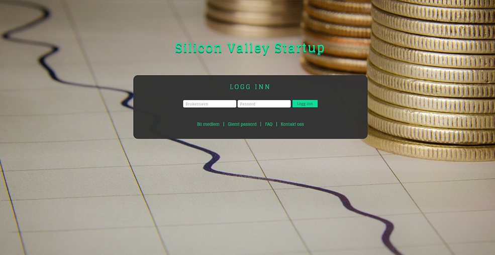
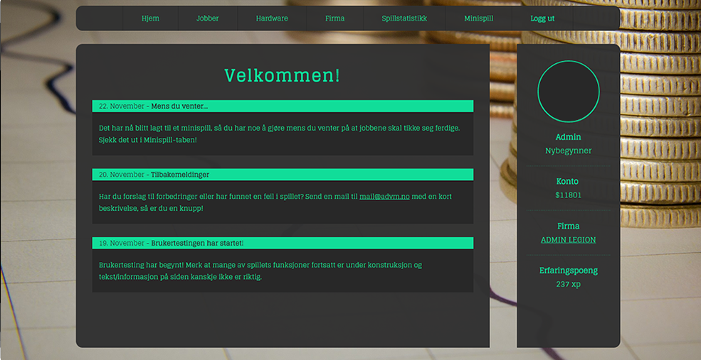
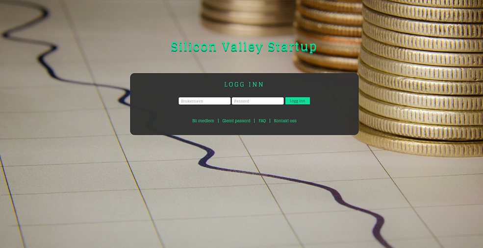
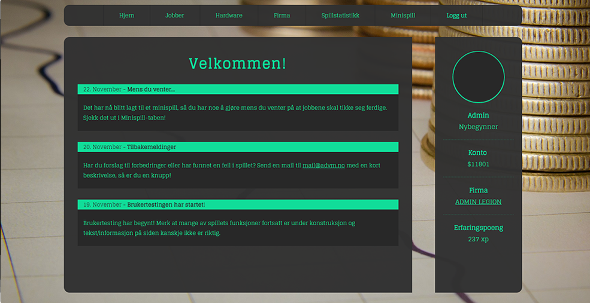

Ideen vår gikk ut på å lage et tekstbasert rollespill hvor du starter som en utvikler og gjør "jobber" for å tjene erfaring og penger. Vi hentet inspirasjon fra Nordicmafia.com, men med vår egen vri hvor man heller er i IT-verdenen. Spillet tok sikte på gi morsom underholdning til IT-studenter primært. Ideen ville også gi oss en mulighet til å vise fram mestring av brukte teknologier.
Etter vi mottok meldingen om at siden måtte fungere uten PHP og MySQL, var planen å lage en ekstra versjon i ren HTML hvor du kunne se design og layout. Etter litt idemyldring kom vi fram til at vi heller skulle lage en interaktiv veiledning i Javascript som viste noe av basic funksjonene til spillet. Dette ville gi en større utfordring og mer bruk av JavaScript.
Under samme idemyldring kom også ideen om et minispill fram. Ideen ble jobbet med og utviklet seg til å bli minispillet "Goalscorer!". Minispillet passet utmerket som et komplement til rollespillet da det vil være ventetid på grunn av "cooldowns" på visse funksjoner.
Prosjektside : http://student.cs.hioa.no/~s231776/
Forprosjektside: http://student.cs.hioa.no/~s231776/forprosjekt/
Rapportside: http://student.cs.hioa.no/~s231776/rapport/
Gruppen valgte å bruke git. Valget vårt falt derfor på tjenesten GitHub fordi det var det mest kjente. Dette betydde at vi ville ha lett tilgang til guider for å lære oss Git med bruk av GitHub.
I starten virket Git forvirrende for samtlige gruppemedlemmer. Det virket lettere å bruke for eksempel Dropbox, men etter en uke så vi fort nytteverdien. Den detaljerte historikken over endringer og mulighetene for branching, merging og sikkerhetskopiering av hver eneste versjon gjør det enkelt å samarbeide.
På grunn av at vil skulle bruke PHP brukte vi WAMP eller XAMPP på hver vår pc. Dette gjorde at vi kunne raskt teste siden og gjøre endringer lokalt.
I starten av prosjektet ble vi fort enige om kommunikasjon og samarbeid. Vi satte opp faste dager i uken hvor gruppen skulle jobbe sammen og laget en gruppechat på Facebook. Vi satte også opp hva gruppen forventet av arbeid og innsats. De første dagene gikk vi gjennom GitHub i fellesskap, satte opp WAMP/XAMPP, lagde en git-repositry og utforsket mulighetene for prosjektet og hvordan vi skulle gjennomføre disse. Dette skapte et godt grunnlag for arbeid og samarbeid.
For uke 1 hadde vi som plan å:
For uke 2 hadde vi som plan å:
For uke 3 hadde vi som plan å:
For uke 4 hadde vi som plan å:
Når vi startet var vi sikre på at vi ville ha MVC i bunnen av siden. Vi visste egentlig ikke fordelene med dette i praksis, men hadde fått høre fra både lærere, bedrifter og internet at dette var lurt. Fordeling av ansvar, separering av kode og at det var lett å bygge på var noen av fordelene vi fant nyttige med MVC. Vi fant en guide for hvordan man skal bygge et MVC basis fra bunnen av(ref: "src"). Denne basisen ble modifisert til vårt bruk, blant annet ved å implementere loginfunksjonen, så basisen måtte bli kraftig modifisert.
Vi så fort nytten av MVC når vi skulle legge til nye sider. Det ble veldig enkelt å legge til en ny side, mens logikken til hver av sidene ble separert. Dette gjorde at en bug i en ny side ikke hadde påvirking på noen gamle sider.
Som skrevet over måtte vi, med ganske dårlig tid, lage en ny idé med tanke på kun HTML, Javascript og CSS. Dette endte opp i en guide/tutorial av funksjonene i det php-baserte spillet vårt. Måten denne guiden fungerer på er at det øverst på siden vil være en tekstboks med informasjon. Denne guiden informerer om alt fra hvordan man bruker de forskjellige funksjonene til hva alt man ser betyr. Den samme boksen består også av to knapper. Én knapp for å gå til neste instruks og én for å gå tilbake. Noen ganger vil en av eller begge knappene være borte. Da er det enten noe brukeren må gjøre et annet sted på skjermen, eller så er det en nedtelling som brukeren må vente på.
Når vi utviklet guiden prøvde vi ut en del forskjellige måter å plasser informasjonsboksen på. Etter mye prøving og diskusjon, kom vi fram til at det var 3 måter som var best. Den som egentlig var favoritten var en tekstboks vi flyttet rundt på skjermen etter hva informasjonen var om. Denne ble brukt først, men så fant vi ut at boksens posisjon varierte veldig mye fra skjermoppløsning til skjermoppløsning. Dermed måtte denne måten droppes fordi det ble alt for avansert å plassere boksen nøyaktig riktig ut ifra brukerens skjermoppløsning. Dermed stod vi igjen med 2 måter: en avlang tekstboks på bunnen av siden, eller en avlang tekstboks på toppen av siden. Etter en liten diskusjon i gruppa ble alle enige om at en tekstboks på toppen av siden var det beste, og derfor endte vi opp med denne løsningen.
I den ene delen av guiden vil brukeren komme til et minispill. Dette minispillet er også noe vi kom på på grunn av begrensingene vi fikk, men det endte også opp med å bli en viktig del av det php-baserte spillet. Dette spillet er laget kun ved hjelp av canvas og javasript, pluss en div og litt css. Hovedfunksjonen til dette minispillet er å underholde brukere mens de venter på at cooldown på jobber skal bli ferdig. Ellers er det også bare et spill som brukerne kan spille hvis de kjeder seg. Spillet går kort forklart ut på at du kontrollerer et fotballmål som du skal bruke til å fange baller som faller nedover på skjermen. Det er et ganske så enkelt spill, men det er veldig avhengighetsskapende. Noe som også er positivt for oss som har laget spillet.
Under utvikling av minispillet byttet vi fremgangsmåte flere ganger. Det første utkastet gikk ut på å fange fallende firkanter med en avlang boks. Første utkast var også bygd opp av mange div'er og i javascript koden ble det brukt setInterval for å time fallet av firkanter og bevegelse av boks. Dette fant vi ganske fort ut at ikke var en god løsning. Spillet hadde forskjellige hastigheter i forskjellige nettlesere, og i tillegg var spillet veldig hakkete. Etter en del research, prøving og feiling kom vi fram til å bruke canvas og requestAnimationFrame. Dette førte til en mye smoothere opplevelse, og hastigheten var alltid den samme fordi vi justerte den etter hvor ofte requestAnimationFrame klarte å oppdatere tegningene. Helt til slutt kom vi på ideen å lage et fotball basert spill, bare med en litt annen skru: nå var poenget å flytte målet for å fange ballen, ikke skyte ballen etter målet. Spillets utseende ble designet av oss i Photoshop.
I stedet for å bare ha en farge som bakgrunn, valgte vi å bruke et bilde. Dette gjorde vi for å skape mer dynamikk og dybde i designet, og for å klart skille sidens forskjellige elementer. Bildet er hentet fra flickr og er funnet ved hjelp av Creative Commons Search, en søkemotor for å finne bilder uten eller med få reserverte rettigheter. Det vil si at vi står fritt til å bruke og privatpersoners verk uten å måtte betale eller spørre om lov, så lenge eier blir riktig kreditert. Bildets motiv er en graf som beveger seg oppover, samt en stabel med mynter øverst i høyre hjørnet. Siden spillet handler om å bygge seg opp i IT-bransjen, følte vi at dette passet ypperlig, i tillegg til at det fremstår seriøst og ordentlig. Som du kan se er fotograf kreditert etter ønske nederst i høyre hjørne, samt en link til Creative Commons-lisensen bildet ligger under.
Vi har i hovedsak brukt to farger på prosjektet vårt, turkis og mørkegrå. Den grå fargen er i hovedsak brukt, i forskjellige nyanser/synbarhet, som bakgrunn på elementene, mens den turkise stort setter brukt som brødtekstfarge. Dette er to farger som står sterkt i kontrast til hverandre, og det skaper derfor god lesbarhet med den turkise over den grå.
Vi valgte å ha turkis som hovedfarge. Det er en kjølig farge, men likevel ikke kald. Gruppen følte at fargen akkurat fremstår seriøs nok uten å være kjedelig, og vi var innom flere andre farger, spesielt blånyanser, før vi falt på fargen vi gjorde. I utgangspunktet var planen å bruke en mer noen-grønn farge (se skissene i forprosjektet), noe vi senere fant ut ble for lys og framsto som noe useriøs. Fargen er også sterk nok til å fange brukerens oppmerksomhet, samtidig som det er en balansert og harmonisk farge som er lett å se på.
Her er bilder av skissene vi lagde i starten av perioden, og skjermdump av ferdig layout. Vi ble fornøyde med designet vi kom opp med i skissefasen, og vi har holdt oss heller slavisk til det i realiseringen av nettsiden. Vi har valgt å gå bort fra den neon-blå fargen vi først ble enige om, som du kan se er endret fra skisse til realitet.
 



Etter vi hadde fått på plass endel av hovedfunksjonene, åpnet vi siden for at medelever kunne registrere seg på siden og komme med tilbakemeldinger. En epost for tilbakemeldinger ble satt opp, men dessverre fikk vi ingen tilbakemeldinger fra brukerne. Derimot fikk vi se hvordan databasen oppførte seg og vi fikk over 60 registrerte brukere.
Dette prosjektet har vært morsomt, slitsomt og lærerikt. Vi var heldige som fant hverandre tidlig og kom i gang raskt med gruppearbeidet. Ettersom vi alle hadde samme interesser og mål, kom vi alle godt overens og fungerte veldig godt som gruppe.
Vi brukte mye tid med hverandre og bygde et godt sammhold mellom oss. Vi hadde alle forskjellige kunnskaper og har delt dette med hverandre gjennom prosjekttiden, noe som har økt kunnskapsnivået til alle på en effektiv måte. I starten møttes vi ofte og fikk jobbet sammen, mens utover i prosjektet tok vi mer og mer bruk av verktøy som Git og Skype mye mer for å få effektivisert jobbingene uten å måtte være på samme sted. Spesielt for de som bor utenfor byen var dette en viktig løsning.
Vi er meget fornøyde med resultatet, selv om vi midt i prosjektet opplevde en kommunikasjonsfeil mellom elever og lærere, som gjorde at vi måtte endre oppgaven. På grunn av disse restriksjonene ble php-versjonen vår noe holdt tilbake og ble ikke helt ferdig, men vi skal fortsette å jobbe med siden etter innleveringen, for å konstant forbedre den, uten restriksjoner. Alt i alt har hele perioden vært en meget lærerik prosess.